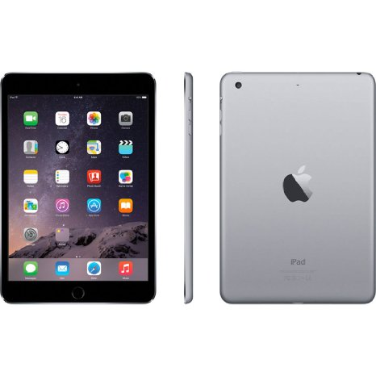

Introduction
The iPad Air 2 may have stolen all the spotlight, but that's not because of poor marketing planning. Apple did little to change the third generation of the iPad mini so it got little stage time. But it's not our job to decide which product gets the most fanfare. Our job is to see whether it's worth your money.
The list of the new features of the new iPad mini 3 is one really short list. The Home button now doubles as a Touch ID fingerprint sensor. There is also a new golden paintjob available along with the usual Space Gray and Silver. Oh, and the 32GB model is now axed - you only get to pick from 16, 64 and 128GB options.
Everything else is completely identical to the iPad mini 2 - the 7.9" Retina display, the Apple A7 chipset, the 5MP rear camera, and the thin and light aluminum unibody. No matter how small the hardware bump however the Apple iPad mini 3 remains one really powerful slate, positioned near the top of the food chain as far as tablets go. Let's explore it in detail.
Key features:
Metal unibody, 7.5mm slim, 331g of weight Optional LTE connectivity (Cat. 4, 150Mbps downlink) 7.9" 1,536 x 2,048 LED-backlit IPS LCD with 324 ppi pixel density Apple iOS 8 Dual-core 1.3 GHz Apple A7 chipset, M7 motion co-processor, PowerVR GX6430 GPU, 1GB of RAM 5MP autofocus camera, 1080p@30fps, 1.2MP front-facing camera 16/64/128GB of built-in storage Touch ID fingerprint sensor built into the Home button 6,471 mAh battery
Main disadvantages:
No microSD slot Pricey memory upgrades, 32GB version should have been standard No NFC connectivity, Apple Pay has limited functionality Apple iOS 8 still relies on iTunes for music and file transfers The Apple iPad mini 3 is a pricey little tablet, but it has powerful hardware and a beautiful screen. It probably isn't worth the upgrade if you are coming from the iPad mini 2, but as a standalone purchase it sure looks attractive.